orion
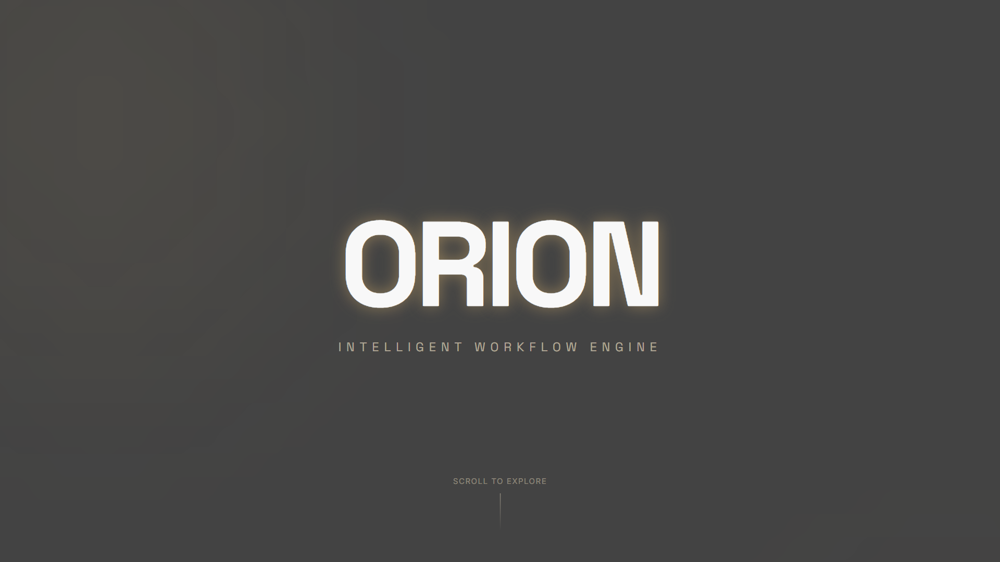
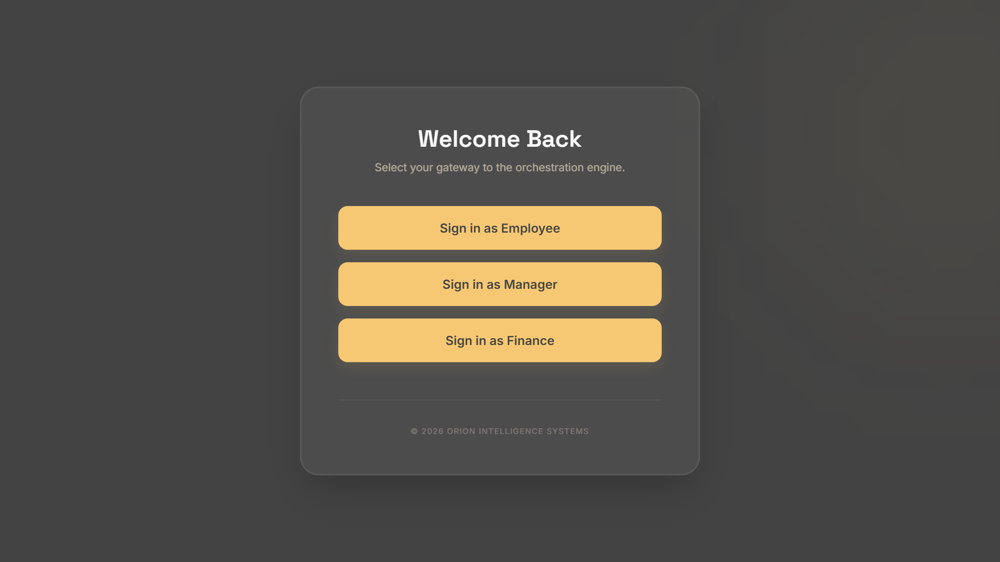
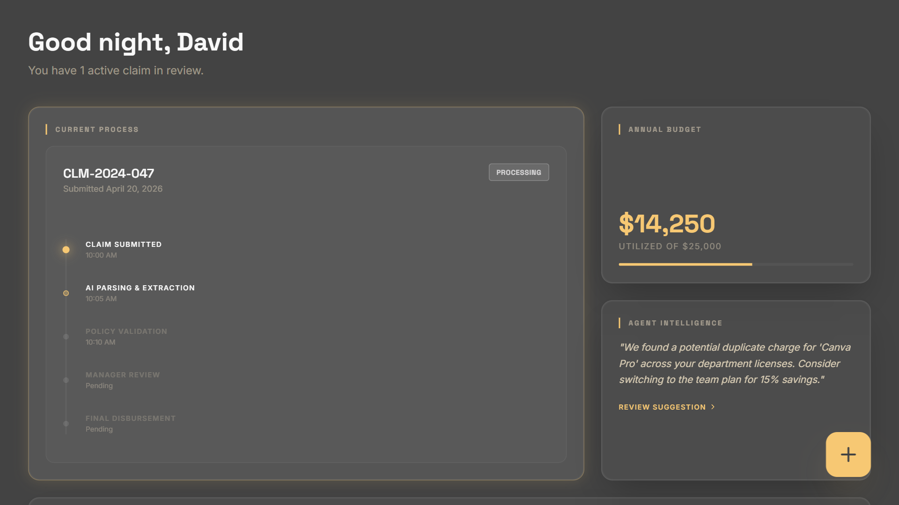
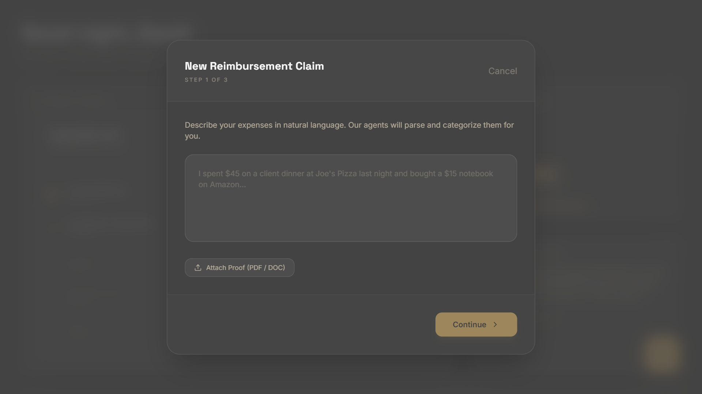
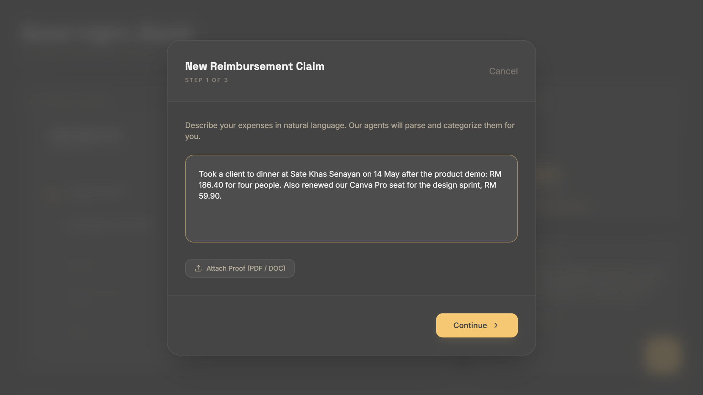
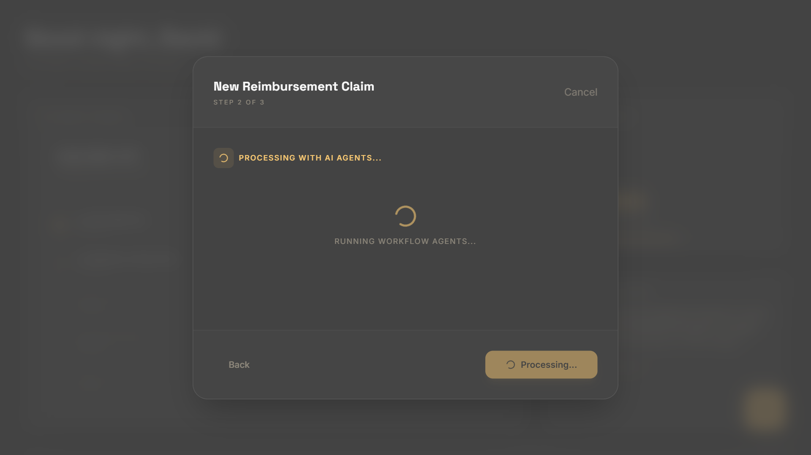
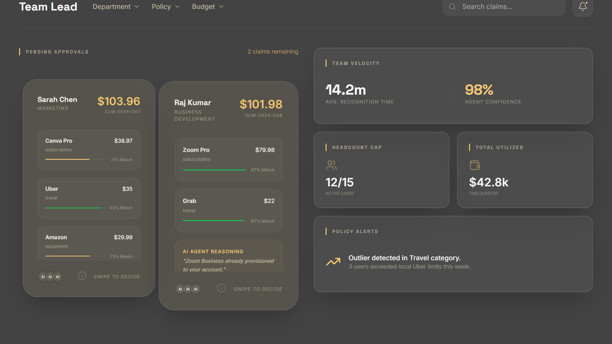
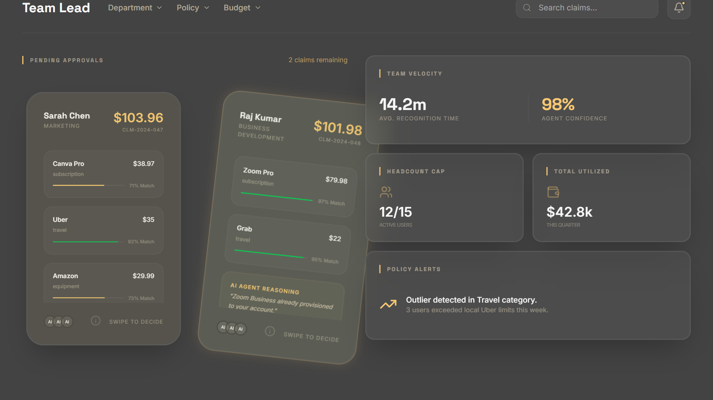
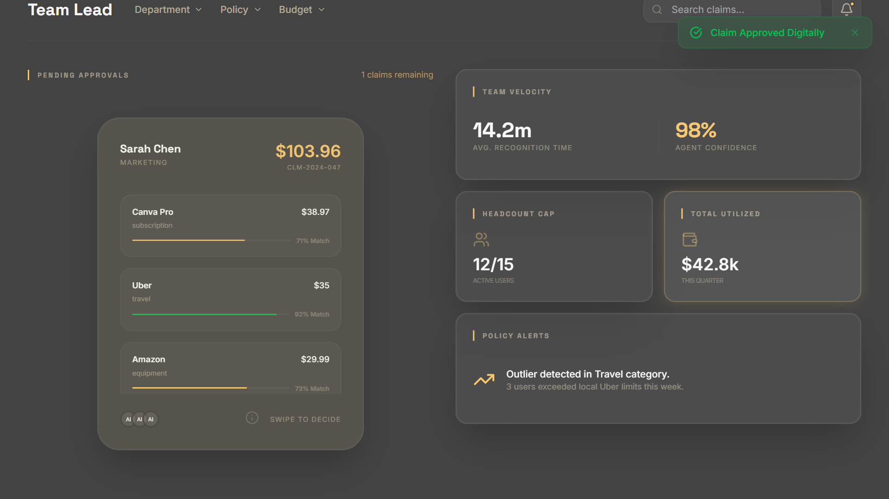
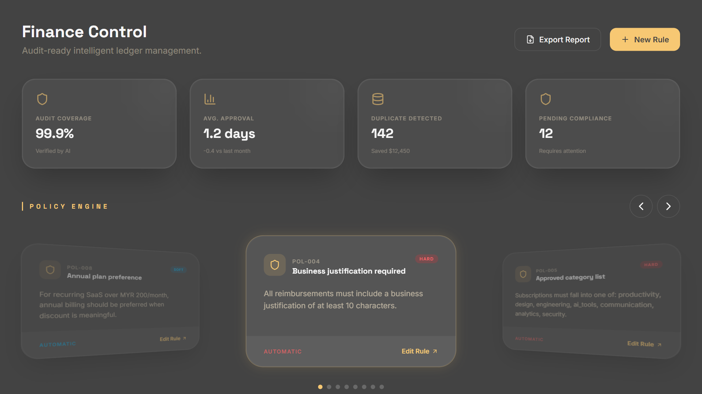
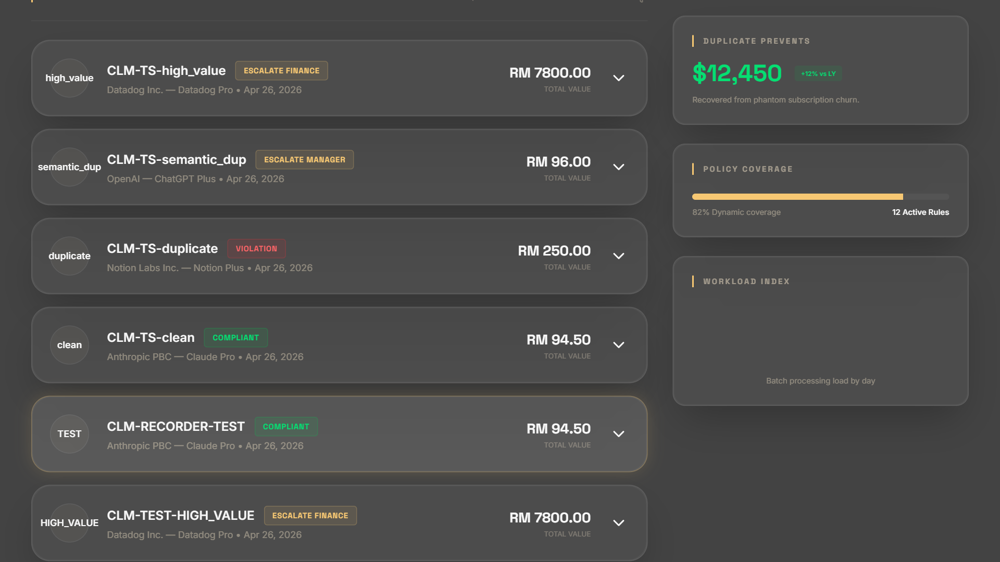
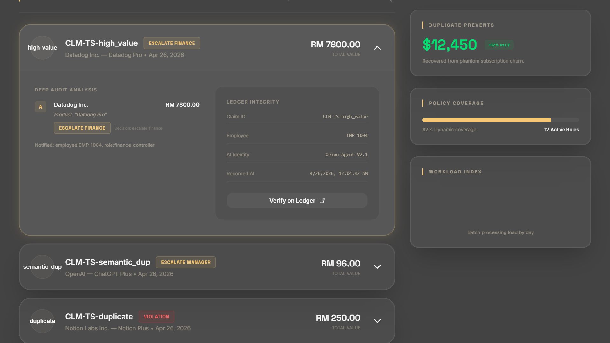
Expense claims that audit themselves.Six AI agents take a claim from one sentence to a decision.
Three roles, one workflowEmployee, manager, finance.
01 · SubmitJust describe the expense.No form to fill in. The agents pull out vendor, amount and category.
02 · Agents workIt caught a duplicate Canva Pro seat.Parsed, checked against policy, and compared with existing licences.
03 · DecideManagers swipe only the edge cases.Every card carries the agent's reasoning.
04 · GovernFinance writes the rules.Eight policies drive every automatic decision.
05 · ProveEvery decision leaves a ledger record.Which agent decided, who was notified, and when.
OrionTop 24 of 100+ teams · UMHackathon 2026